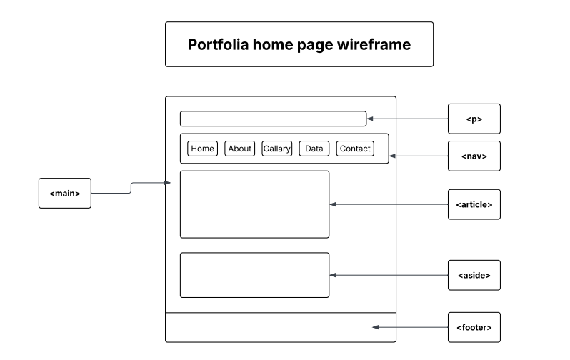
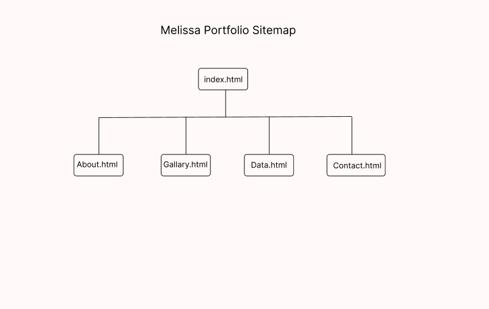

Portfolio Media
This gallery uses figures and captions so each visual has clear context for all users.

Homepage wireframe showing the planned structure and content arrangement for the site.

Site map outlining how the portfolio pages are linked together.
Project Walkthrough Video
This short clip gives an overview of the portfolio pages, layout structure, and how users move through the site navigation.
Project walkthrough video demonstrating the portfolio layout and page navigation.